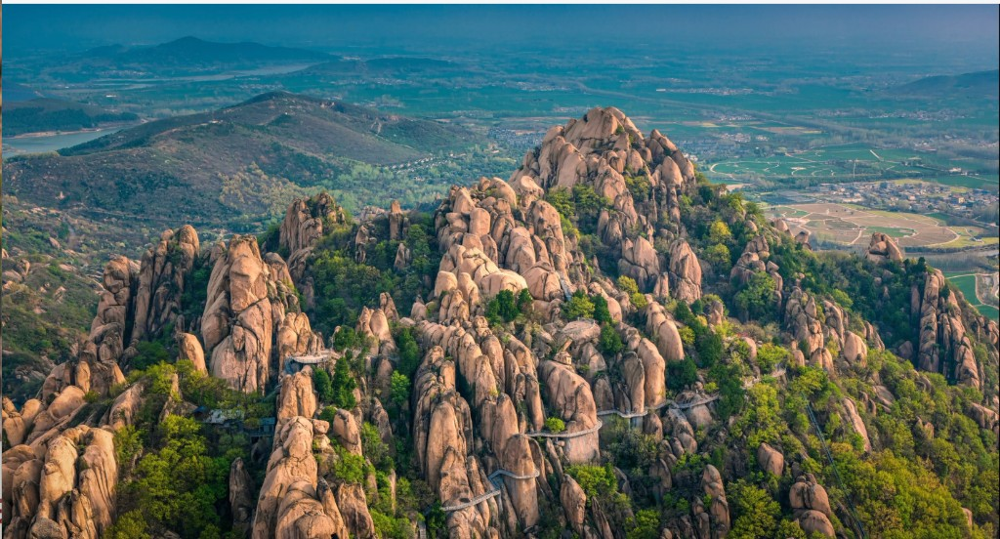

欢迎来到嵖岈山
驻马店市嵖岈山旅游景区，位于河南省驻马店市遂平县，南临驻马店市，距武汉市300千米，北靠漯河市，距郑州市180千米。景区总面积148平方千米，主景区面积50平方千米，属于典型花岗岩地质地貌的自然山水景观，有“福地洞天、美景天成、天下奇观”之誉。
嵖岈山旅游区由南山、北山、花果山、六峰山、天磨湖、琵琶湖、百花湖、秀蜜湖八大景区组成，有九大奇观、九大名峰、九大名洞、九大名棚、九大奇石，现存各类景点300余处，具有“奇、险、奥、幽”四大特点。景区为央视版《西游记》《长征》及多部影视作品主要外景拍摄地，2015年晋升国家5A级旅游景区。